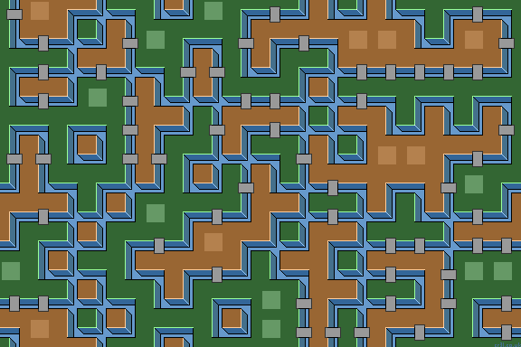

Border Paths (2-corner Tilesets)
Here is a 2-corner Wang tileset and its resulting typical path layout.
| 0 | 1 | 2 | 3 | 4 | 5 | 6 | 7 | 8 | 9 | 10 | 11 | 12 | 13 | 14 | 15 |
As an alternative design, we can create paths that follow the border between the yellow and blue areas.
| 0 | 1 | 2 | 3 | 4 | 5 | 6 | 7 | 8 | 9 | 10 | 11 | 12 | 13 | 14 | 15 |
| 0 | 1 | 2 | 3 | 4 | 5 | 6 | 7 | 8 | 9 | 10 | 11 | 12 | 13 | 14 | 15 |
Look carefully and you can see the moat or path lies between the Wang tile yellow and blue areas. We can still color the two areas either side of the path differently.
There are now no dead-end or branch tiles. Straight, bend and cross-road tiles are 'doubled up' (each with opposite area coloring). This produces a multi-labarinth design, ie a maze with no branches. Only one or more circular routes.
Tile_5 and Tile_10 Variations
The lower tileset allows alternative designs for the cross-roads tiles (tile_5 and tile_10). Using a pair of 'double bend' tiles produces a maze of smaller isolated loops. A pair of over-pass tiles produces a more interesting woven maze with much longer path loops.
Stage Array
The tiles automatically tile correctly using the existing Wang tiling method. Simple bridges are added to the straight tiles, so linking the grass and sandy islands. Better if sprites wander the flat areas and connecting bridges, not the moat.
Stage: Random 2-corner Island Tiles
Stage: Random 2-corner Border Tiles

We could also use Wang edge tiles instaed of corner tiles.
Border Paths (2-edge Tilesets)
Here is a 2-edge Wang tileset and its resulting typical path layout.
| 0 | 1 | 2 | 3 | 4 | 5 | 6 | 7 | 8 | 9 | 10 | 11 | 12 | 13 | 14 | 15 |
In this tileset design, paths lie between the yellow and blue areas.
| 0 | 1 | 2 | 3 | 4 | 5 | 6 | 7 | 8 | 9 | 10 | 11 | 12 | 13 | 14 | 15 |
Look carefully and you can see the path lies between the Wang tile yellow and blue areas. We can still color the two areas either side of the path differently.
There are now no dead-end or branch tiles. Straight, bend and cross-road tiles are 'doubled up' (each with opposite area coloring). As paths join at tile corners, this produces a well connected maze.
Tile_5 and Tile_10 Variations
We can replace the cross-roads tiles (tile_5 and tile_10) with different designs. Using a double bend pair reduces maze connectivity while an under / over-pass pair adds maze weave. All tiles tend to produces a 'camouflage netting' look.
|
Stage: Random 2-edge Border Tiles